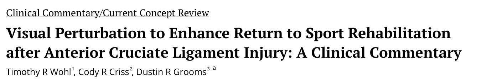
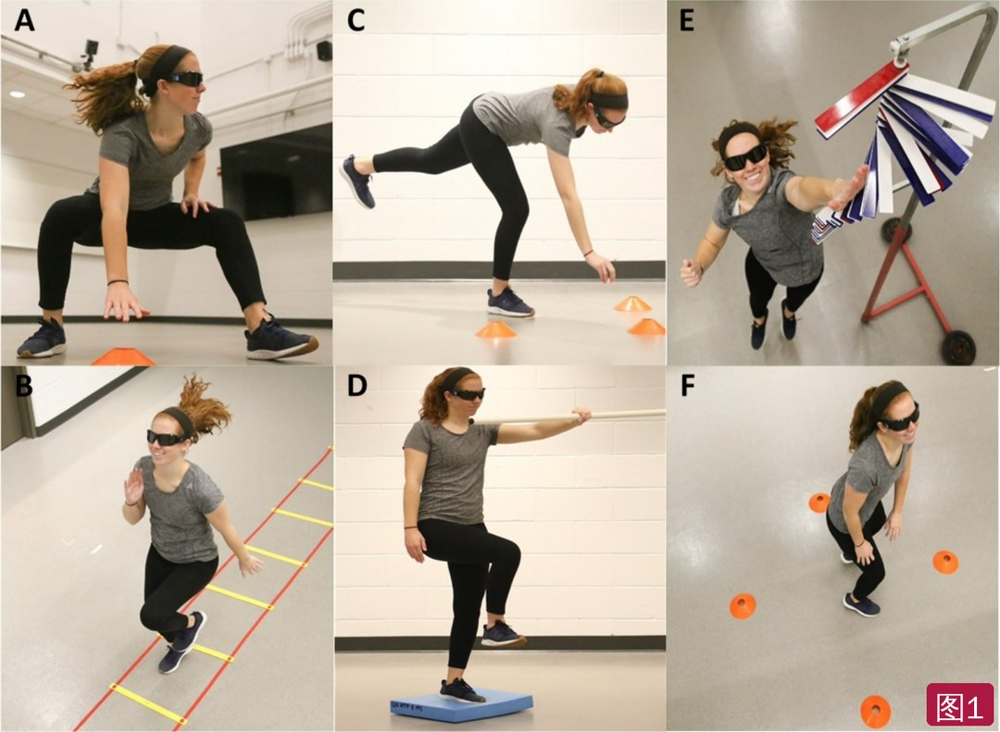

🔖原文首页（IJSPT 2021 年第 16 卷第 2 期）
📚 文献卡片
▪ 英文原题：Visual Perturbation to Enhance Return to Sport Rehabilitation after Anterior Cruciate Ligament Injury: A Clinical Commentary（用视觉干扰增强 ACL 损伤后的重返运动康复：临床评论）
▪ 作者：Timothy R. Wohl · Cody R. Criss · Dustin R. Grooms
▪ 机构：俄亥俄大学荣誉导师学院、俄亥俄肌骨与神经研究所、运动防护与物理治疗系；俄亥俄州立大学物理治疗系（美国）
▪ 期刊：International Journal of Sports Physical Therapy（IJSPT）
▪ 年卷期：2021;16(2):552-564
▪ PMCID：PMC8016421
▪ 文章类型：临床评论 / 当前概念综述
▪ 证据级别：5 级
▪ 关键词：anterior cruciate ligament · ACL · rehabilitation · stroboscopic glasses
ACL 断裂后，即使接受了全面康复、恢复了股四头肌力量和关节稳定，再伤率仍然很高，年轻女运动员尤甚。作者认为，这可能与康复没处理好的“神经层面”后果有关。
ACL 虽是外周关节损伤，但积液、疼痛、机械不稳和关节机械感受器丢失（传入阻滞）会引起中枢神经系统重组：本体感觉下降、协调受损，控制下肢时更依赖视觉、注意力和认知。比赛场上视觉信息铺天盖地，这种“靠眼睛盯着动”的代偿就可能成为再伤隐患。
本文提出用频闪眼镜（stroboscopic glasses）做视觉干扰训练，配合视觉外部注意焦点和内隐学习两条运动学习原则，促使神经系统把权重从视觉“调回”本体感觉，和/或提高视觉-运动处理效率。
| 环节 | 要点 |
|---|---|
| 问题 | ACL 损伤后控制下肢更依赖视觉和认知；视觉受干扰或双任务时表现明显变差 |
| 证据 | 行为学（遮挡视觉后姿势摇摆增加）+ 神经影像（视觉相关脑区和额叶激活增加、神经效率下降） |
| 工具 | 频闪眼镜：透明期固定 100 毫秒，不透明期 25～900 毫秒可调，分级减少视觉信息 |
| 运动学习 | 视觉外部注意焦点（盯环境/目标而非关节）+ 内隐学习（比喻式指令、简单对/错反馈） |
| 训练举例 | T 型测试、敏捷梯、单腿硬拉、泡沫垫单腿站、纵跳摸高、转向深蹲跳 |
| 进阶 | 先能完成动作再戴眼镜；从最容易的级别开始；用错误计分、NASA-TLX 或 Borg 量表调难度 |
一句话概括：让患者在“看不太清”的情况下练动作，同时用目标和比喻代替“膝盖别内扣”式的提示，减少对视觉和意识控制的依赖。
• 视觉不受限时，ACL 损伤者与健康人的姿势控制相近；视觉一受干扰，损伤者表现明显更差（摇摆增加、任务失败）
• 有荟萃分析认为 ACL 重建者不像未重建者那样依赖视觉，但可能是测试不够难：单腿站允许伸直膝、静态任务挑战不足、完全闭眼不足以干扰视觉空间处理
• 在频闪眼镜下的跳落、闭眼时双腿到单腿站的过渡和视觉-认知任务中，ACL 重建者受影响更大
• 原因：Ruffini、Pacini 小体等韧带机械感受器提供关节位置、运动和加速度信息，丢失后中枢把权重转向更可靠的视觉和前庭（贝叶斯最优整合模型），或调动更多认知和注意
• 康复本身也可能加重视觉依赖：多用视觉主导的训练，并给予内部注意焦点反馈（强调关节角度、肌肉激活）
• 过度膝外翻是初次和再次 ACL 损伤的主要危险因素（敏感度 78%，特异度 73%）
• Herman 和 Barth：视觉记忆和神经认知较差者，在落地后需要临时反应的跳落中膝外翻更多
• ACL 损伤者在姿势稳定、步态和平衡任务中的双任务代价更高（双任务如单腿站同时从 1000 每次减 7 倒数）
• 可能机制：初级运动皮层失去正常 ACL 传入信息，额叶（辅助运动区、前辅助运动区）增加活动来代偿；比赛的认知需求可能超出患者同时关注外界刺激并保持安全力学的能力
| 研究对象 | 发现 | 意义 |
|---|---|---|
| ACL 缺失者（伤后约 2 年） | 单侧屈伸膝时颞下回后部激活增加；前辅助运动区激活增加 | 颞下回后部参与识别生物运动；提示简单动作也需要更多皮层计划 |
| ACL 重建者（术后约 3 年） | 膝及髋-膝协调动作时舌回激活增加 | 舌回参与视觉与触觉的空间整合，提示视觉处理权重转移 |
| ACL 重建者（术后约 5 年） | 额回、额极下部、扣带旁回、前扣带回激活增加 | 用更多认知资源控制运动，神经效率下降 |
| ACL 重建者（术后约 1 年，脑电） | 力控制和关节位置觉任务中额叶 θ 波功率增加 | θ 波反映集中注意和任务复杂度：简单任务也更“费脑” |
| ACL 缺失者（脑电） | 走、跑、落地时 δ、θ、α、β 波功率增加，跑和落地时额顶叶 β 波不对称 | 日常和运动动作需要更多认知/注意资源 |
神经效率：专家完成熟练任务所需的神经活动少于新手，并能应对更复杂的协调和环境干扰。ACL 损伤后神经效率下降，可能导致双任务或非预期动作中表现变差，并在重返运动早期快速增加动作复杂度和环境刺激时增加再伤风险。
• 传统视觉干扰只有睁眼/闭眼两档，没有中间进阶
• 频闪眼镜让镜片在透明和不透明之间切换：透明期固定 100 毫秒，不透明期 25～900 毫秒可调，可以分级减少视觉信息
• 原为便携运动训练工具；研究显示能改善运动一致性判断、分配注意、多目标追踪、短时视觉记忆、预判，以及单腿蹲、冰球、网球、羽毛球等专项表现
• 能在可控的诊室环境中模拟运动时的动态视觉-运动和认知/注意需求
• 目的：减少可用视觉信息，迫使运动员上调剩余的本体感觉和前庭输入；也可能代偿性地提高视觉-运动处理效率
• 外部焦点（EF）关注动作目标或动作对环境的影响；内部焦点（IF）关注身体部位或动作本身
• 作者把 EF 改造成“把注意力推向外部视觉空间”，更接近真实比赛
• 例：单腿站时伸直手臂让一根轻杆保持水平是视觉外部焦点；让患者“注意踝、膝、髋对齐”则是内部焦点——后者是 ACL 康复中的主流做法
• 受限动作假说：有意识地关注动作会限制原本自动的皮层下控制过程；外部焦点能把控制交给皮层下，减轻皮层注意负担
• 外部焦点能改善敏捷表现、提高跳跃高度，并让 ACL 重建者单腿跳远落地更安全；还能延长力竭时间、降低主观用力、提高动作效率
• 人类天生通过观察和试错学会动作（骑车、走路、扔东西）；内隐反馈不依赖明确的口头规则，减少动作所需的注意
• 显性提示调动额顶叶认知过程，内隐提示更直接作用于感觉运动系统，并与运动皮层重组有关
• Popovic 等：内隐反馈比显性反馈或无反馈更能改善落地力学
• 例：训练跳落时，显性方式是逐条告诉运动员躯干前屈、屈膝、膝外翻、足旋转等；内隐方式则用比喻（如“像羽毛一样落地”）加简单的“对/错”“好/不好”反馈
• 省下的认知资源可以用来关注球、对手等外界视觉刺激，同时保持神经肌肉控制

🔖图1：训练举例——T 型测试（A）、敏捷梯（B）、单腿硬拉（C）、泡沫垫单腿站（D）、纵跳摸高（E）、深蹲跳（F）；受试者佩戴频闪眼镜
• T 型测试（A）：前跑 10 米摸锥桶，向一侧切 5 米摸锥桶，再向对侧切 10 米，回中 5 米，最后后退跑 10 米回起点；进阶时由治疗师在到达第一个锥桶前喊“左/右”，变成非预期切步（非预期切步的损伤风险力学更明显）
• 敏捷梯（B）：在梯格内按指定脚步模式移动
• 单腿硬拉（C）：轻轻把一个小物件放在锥桶旁；进阶时在视野内不同角度放多个锥桶（距离为单腿站时最大伸够距离），治疗师随机喊“左/中/右”
• 泡沫垫单腿站（D）：伸直手臂握一根轻杆，专注于让杆保持水平
• 纵跳摸高（E）：用 VERTEC 摸到最大纵跳高度 80% 的标记；起跳腾空初期治疗师喊“左/右”，要求单腿落地，形成非预期落地
• 深蹲跳（F）：在 0°、90°、180°、270° 方向放 4 个编号锥桶，治疗师快速喊号，每次跳完转身面对对应锥桶；可增加锥桶或加快喊号
表1 采用视觉外部焦点和内隐学习原则的器材与指令
| 训练 | 视觉提示 | 内隐提示 |
|---|---|---|
| T 型测试 | 摸锥桶 | “像猎豹一样快跑” |
| 敏捷梯 | 梯子的边界 | “地板像岩浆一样烫” |
| 单腿硬拉 | 把物件放到锥桶旁 | “像水一样流畅” |
| 泡沫垫单腿站 | 保持横杆水平 | “像岩石一样稳” |
| 纵跳摸高 | 摸到头顶目标 | “像火山一样爆发” |
| 深蹲跳 | 落地时面向锥桶 | “像袋鼠一样跳” |
表2 评估表现的错误计分
| 训练 | 记为错误 |
|---|---|
| T 型测试 | • 漏摸锥桶 • 切错方向 |
| 敏捷梯 | • 碰到梯子 • 落脚位置错误 |
| 单腿硬拉 | • 对侧脚触地 • 任一手触地 • 物件放错位置 |
| 泡沫垫单腿站 | • 对侧脚触地 • 任一手触地 |
| 纵跳摸高 | • 没摸到目标 • 落错脚 |
| 深蹲跳 | • 落地朝向错误 |
• 先确认患者不戴眼镜能完成所有训练
• 从最容易的级别（透明/不透明切换频率最高）开始；表现进步后逐步提高难度
• 除错误计分外，可用 NASA 任务负荷指数或 Borg 主观用力量表调整难度：想模拟“困难”的比赛情境，但患者只评为“中等”，就提高干扰级别
• 另一种做法：先把眼镜加到低于当前能力的训练上。例如刚能完成单腿跳的患者，先在单腿平衡中戴眼镜，成功后再在单腿跳中戴
• 证据级别低：5 级临床评论；视觉依赖和神经效率下降的证据来自横断面行为学和神经影像研究，尚无研究验证频闪眼镜训练能改善 ACL 患者结局或降低再伤，作者也明确说需要研究
• 亮点：把神经科学发现转化为可操作的训练，给出具体动作、视觉提示、比喻指令和错误计分，便于临床和研究复制
• 局限：频闪眼镜需要专门设备、成本不低；未给出每次训练的剂量、频次和级别进阶的具体标准；神经影像研究样本小、对象（缺失/重建、伤后时间）不一致
• 注意：视觉依赖的证据并不完全一致（荟萃分析显示重建者依赖程度低于未重建者），作者认为可能是测试不够难
• 小瑕疵：T 型测试描述中的回程方向与标准 T 型测试（侧滑步、后退跑）略有出入；原文多处“perturbating”为非标准拼写
① 为什么：ACL 损伤后中枢重组，控制下肢更依赖视觉和认知，比赛中容易“顾此失彼”
② 用什么：频闪眼镜，透明 100 毫秒、不透明 25～900 毫秒分级可调
③ 怎么教：视觉外部焦点（摸锥桶、保持杆水平）+ 内隐学习（“像羽毛一样落地”，只说对/错）
④ 练什么：T 型测试、敏捷梯、单腿硬拉、泡沫垫单腿站、纵跳摸高、转向深蹲跳，可加非预期口令
⑤ 怎么进阶：先不戴能完成，再从最易级别戴；用错误计分和主观难度调级别
⑥ 证据：理论合理，但疗效尚待研究验证
欢迎关注悦美力公众号，获取更多物理治疗的专业知识！
📄参考文献：
Wohl TR, Criss CR, Grooms DR. Visual Perturbation to Enhance Return to Sport Rehabilitation after Anterior Cruciate Ligament Injury: A Clinical Commentary. Int J Sports Phys Ther. 2021;16(2):552-564. PMCID: PMC8016421.
文中图片来自原文（图中仅有 A～F 字母）；表 1～2 已译为中文，仅用于学术交流。